Last updated: 2020-07-30
Checks: 6 1
Knit directory: gene_level_fine_mapping/
This reproducible R Markdown analysis was created with workflowr (version 1.6.1). The Checks tab describes the reproducibility checks that were applied when the results were created. The Past versions tab lists the development history.
Great! Since the R Markdown file has been committed to the Git repository, you know the exact version of the code that produced these results.
Great job! The global environment was empty. Objects defined in the global environment can affect the analysis in your R Markdown file in unknown ways. For reproduciblity it’s best to always run the code in an empty environment.
The command set.seed(20200622) was run prior to running the code in the R Markdown file. Setting a seed ensures that any results that rely on randomness, e.g. subsampling or permutations, are reproducible.
Great job! Recording the operating system, R version, and package versions is critical for reproducibility.
Nice! There were no cached chunks for this analysis, so you can be confident that you successfully produced the results during this run.
Using absolute paths to the files within your workflowr project makes it difficult for you and others to run your code on a different machine. Change the absolute path(s) below to the suggested relative path(s) to make your code more reproducible.
| absolute | relative |
|---|---|
| /Users/nicholeyang/Desktop/gene_level_fine_mapping/data/training.RData | data/training.RData |
Great! You are using Git for version control. Tracking code development and connecting the code version to the results is critical for reproducibility.
The results in this page were generated with repository version fceec56. See the Past versions tab to see a history of the changes made to the R Markdown and HTML files.
Note that you need to be careful to ensure that all relevant files for the analysis have been committed to Git prior to generating the results (you can use wflow_publish or wflow_git_commit). workflowr only checks the R Markdown file, but you know if there are other scripts or data files that it depends on. Below is the status of the Git repository when the results were generated:
Ignored files:
Ignored: .DS_Store
Ignored: .Rhistory
Ignored: .Rproj.user/
Note that any generated files, e.g. HTML, png, CSS, etc., are not included in this status report because it is ok for generated content to have uncommitted changes.
These are the previous versions of the repository in which changes were made to the R Markdown (analysis/dist_functions.Rmd) and HTML (docs/dist_functions.html) files. If you’ve configured a remote Git repository (see ?wflow_git_remote), click on the hyperlinks in the table below to view the files as they were in that past version.
| File | Version | Author | Date | Message |
|---|---|---|---|---|
| Rmd | fceec56 | yunqiyang0215 | 2020-07-30 | wflow_publish(“analysis/dist_functions.Rmd”) |
Tried exponential decay function and gaussian decay function with 4 different sigma values. I think sigma values and which decay function to use don’t have large impact on the ROC and PR curve.
However, the coefficient for ‘weight’ variable changes a lot when vary sigma values. We might want to use a sigma value based on the shape of the decay curve, which one looks more reasonable in terms of biology.
library(ggplot2)
library(dplyr)
Attaching package: 'dplyr'The following objects are masked from 'package:stats':
filter, lagThe following objects are masked from 'package:base':
intersect, setdiff, setequal, unionrequire(PRROC)Loading required package: PRROCload("/Users/nicholeyang/Desktop/gene_level_fine_mapping/data/training.RData")## remove NAs
dat = rbind(train_pos_all, train_neg_all)
NAs = apply(dat, 1, function(x) sum(is.na(x)))
dat = dat[NAs == 0, ]head(dat) gene_name variant_id UTR5 UTR3 exon intron upstream
1 LRRC39 chr1_100178174_A_G_b38 1 0 0 0 0
2 EXTL2 chr1_100895622_C_T_b38 0 0 0 0 1
3 KIF1B chr1_10211630_C_G_b38 1 0 0 0 0
6 SLC25A24 chr1_108199501_C_G_b38 0 0 0 1 0
8 TAF13 chr1_109076695_G_A_b38 0 0 0 0 1
9 C1orf194 chr1_109113015_C_A_b38 0 0 0 1 0
tss_dist_to_snp y
1 41 1
2 376 1
3 14 1
6 857 1
8 693 1
9 268 1# number of observations in the dataset
dim(dat)[1][1] 65858sum(dat$y == 1) # positive pairs[1] 3828sum(dat$y == 0) # negative pairs [1] 62030par(mfrow = c(1,2))
# proportion of features in the positive set
tot_count = apply(dat[dat$y==1, c(3:7)], 2, function(x) sum(x == 1))
barplot(tot_count/dim(dat[dat$y==1, ])[1], las = 2, main = 'feature proportion in positive set')
# proportion of features in the negative set
tot_count = apply(dat[dat$y==0, c(3:7)], 2, function(x) sum(x == 1))
barplot(tot_count/dim(dat[dat$y==0, ])[1], ylim = c(0, 0.01), las = 2, main = 'feature proportion in negative set')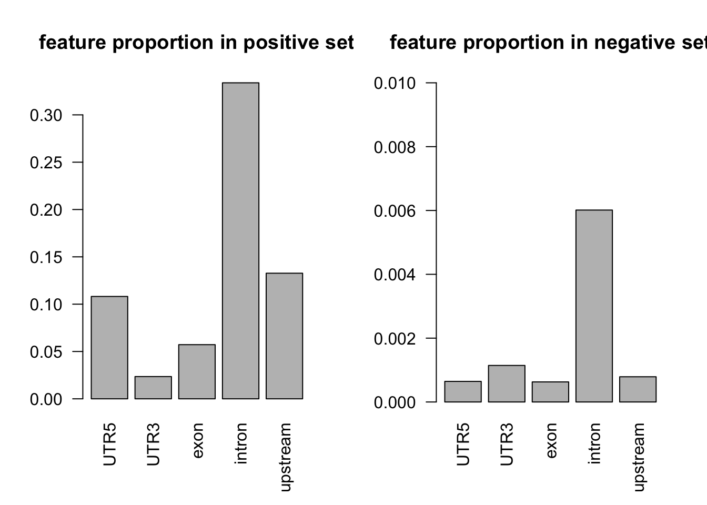
summary(dat$tss_dist_to_snp) Min. 1st Qu. Median Mean 3rd Qu. Max.
0 91718 221543 232448 364130 2176373 summary(dat[dat$y==1, ]$tss_dist_to_snp) # dist_to_tss in positive set Min. 1st Qu. Median Mean 3rd Qu. Max.
0.0 297.8 3009.5 20349.3 17583.0 946399.0 summary(dat[dat$y==0, ]$tss_dist_to_snp) # dist_to_tss in negative set Min. 1st Qu. Median Mean 3rd Qu. Max.
0 112052 237240 245537 372089 2176373 the decay functions look like under the distance range we have.
gaussian_decay = function(sigma, d){
k = exp(-d^2/sigma^2/2)
return(k)
}
exp_decay = function(sigma, d){
k = exp(-d/sigma)
return(k)
}dist = seq(0, 2e7, by = 1e3)
sigmas = c(1e4, 1e5, 1e6, 1e7)
par(mfrow = c(2,2))
plot(gaussian_decay(sigmas[1], dist), type = 'l', ylab = 'weight', xlab = 'distance')
plot(gaussian_decay(sigmas[2], dist), type = 'l', ylab = 'weight', xlab = 'distance')
plot(gaussian_decay(sigmas[3], dist), type = 'l', ylab = 'weight', xlab = 'distance')
plot(gaussian_decay(sigmas[4], dist), type = 'l', ylab = 'weight', xlab = 'distance')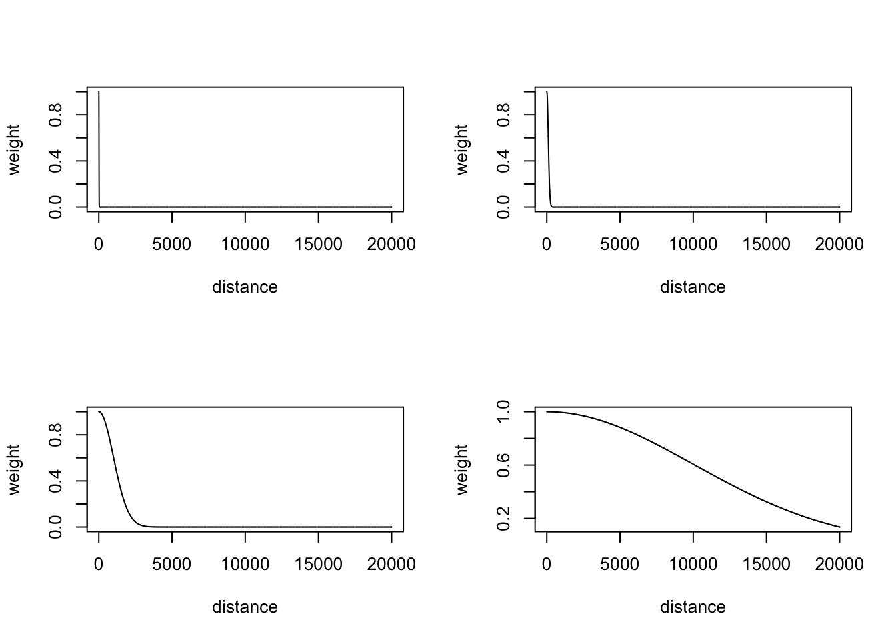
par(mfrow = c(2,2))
plot(exp_decay(sigmas[1], dist), type = 'l', ylab = 'weight', xlab = 'distance')
plot(exp_decay(sigmas[2], dist), type = 'l', ylab = 'weight', xlab = 'distance')
plot(exp_decay(sigmas[3], dist), type = 'l', ylab = 'weight', xlab = 'distance')
plot(exp_decay(sigmas[4], dist), type = 'l', ylab = 'weight', xlab = 'distance')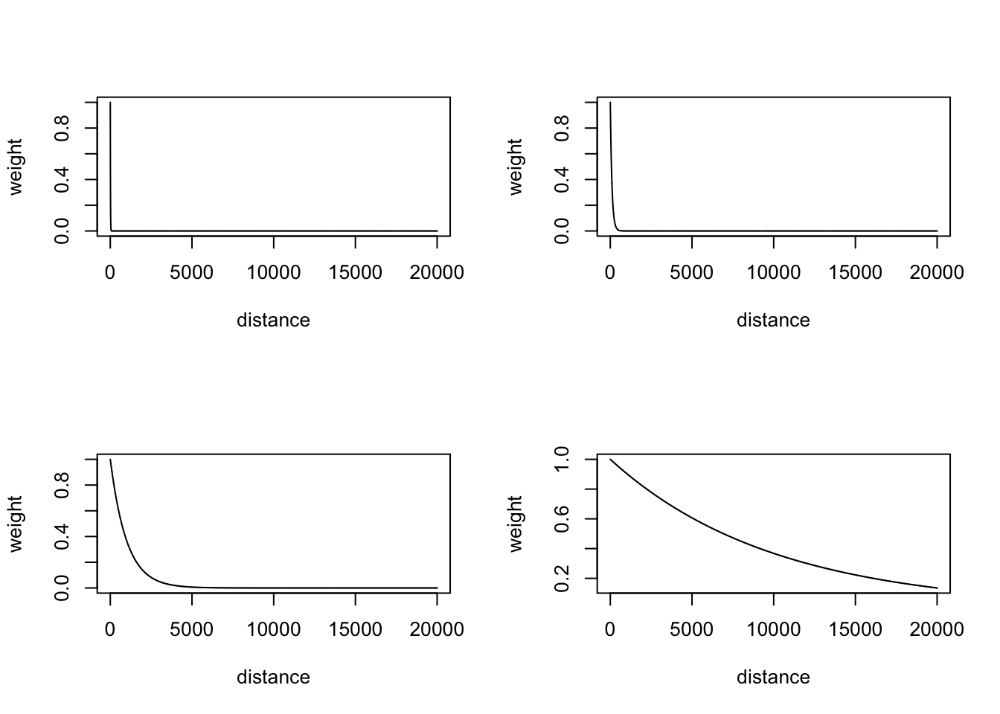
weights = matrix(NA, ncol = length(sigmas), nrow = dim(dat)[1])
for (i in 1:length(sigmas)){
weights[, i] = exp(-dat$tss_dist_to_snp/sigmas[i])
}
weights = data.frame(weights)
colnames(weights) = c('sig1', 'sig2', 'sig3', 'sig4')
dat2 = cbind(dat, weights)ggplot(dat2, aes(x = sig1)) +
geom_histogram(aes(color = as.factor(y), fill = as.factor(y)),
position = "identity", bins = 50, alpha = 0.4) +
scale_color_manual(values = c("#00AFBB", "#E7B800")) +
scale_fill_manual(values = c("#00AFBB", "#E7B800"))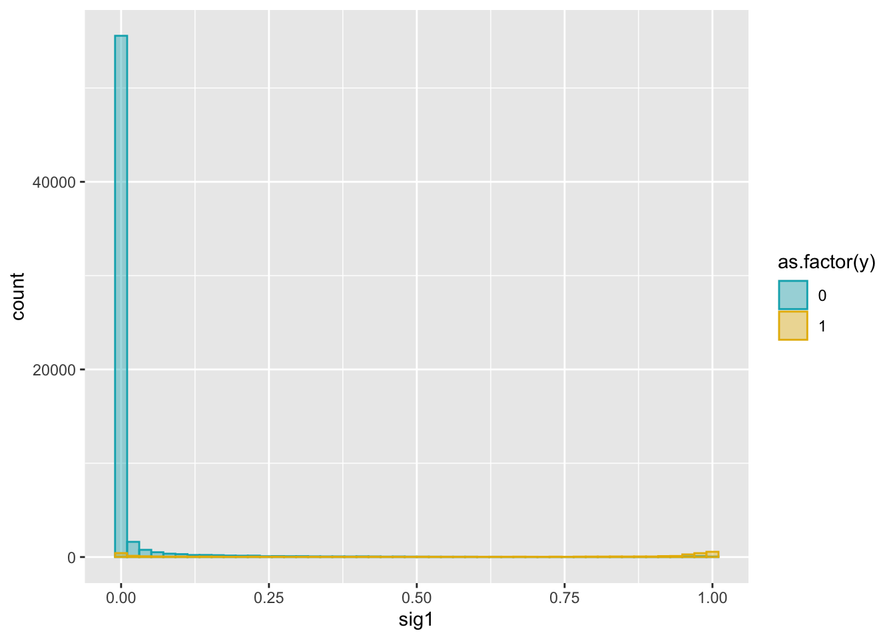
ggplot(dat2, aes(x = sig2)) +
geom_histogram(aes(color = as.factor(y), fill = as.factor(y)),
position = "identity", bins = 50, alpha = 0.4) +
scale_color_manual(values = c("#00AFBB", "#E7B800")) +
scale_fill_manual(values = c("#00AFBB", "#E7B800"))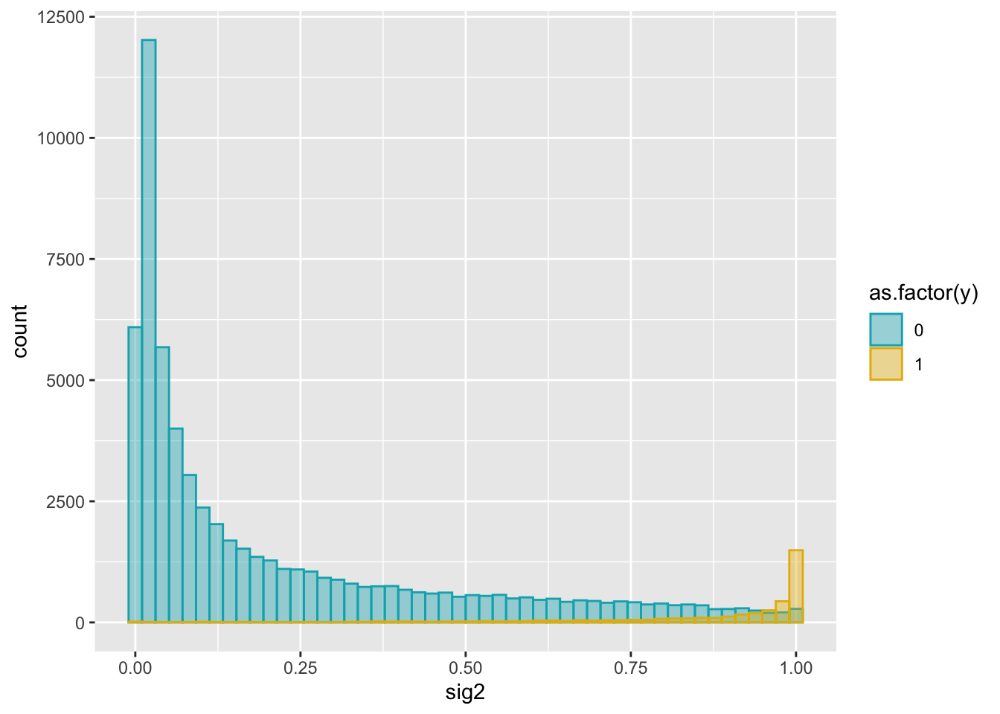
ggplot(dat2, aes(x = sig3)) +
geom_histogram(aes(color = as.factor(y), fill = as.factor(y)),
position = "identity", bins = 50, alpha = 0.4) +
scale_color_manual(values = c("#00AFBB", "#E7B800")) +
scale_fill_manual(values = c("#00AFBB", "#E7B800"))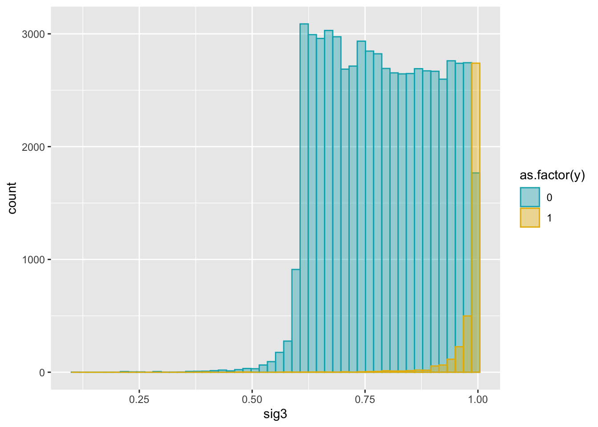
ggplot(dat2, aes(x = sig4)) +
geom_histogram(aes(color = as.factor(y), fill = as.factor(y)),
position = "identity", bins = 50, alpha = 0.4) +
scale_color_manual(values = c("#00AFBB", "#E7B800")) +
scale_fill_manual(values = c("#00AFBB", "#E7B800"))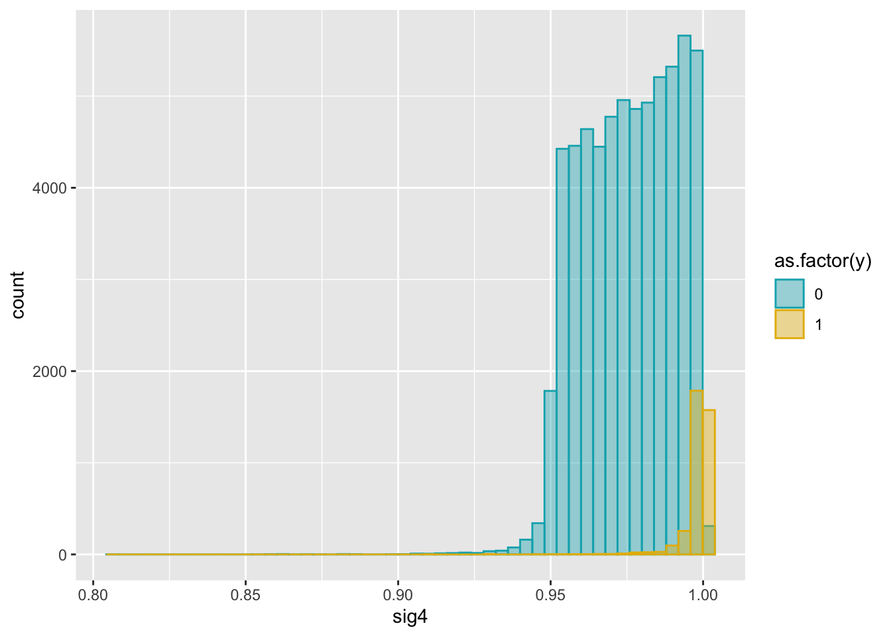
# split data in the same way
set.seed(1)
n = dim(dat2)[1]
indx = sample(1:n, round(2*n/3), replace = FALSE)
train = dat2[indx, ]
test = dat2[-indx, ]# fit model and evaluate performance
fit.sig1 = glm(y ~ UTR5 + UTR3 + intron + upstream + exon + sig1, data = train, family = "binomial")
fit.sig2 = glm(y ~ UTR5 + UTR3 + intron + upstream + exon + sig2, data = train, family = "binomial")
fit.sig3 = glm(y ~ UTR5 + UTR3 + intron + upstream + exon + sig3, data = train, family = "binomial")
fit.sig4 = glm(y ~ UTR5 + UTR3 + intron + upstream + exon + sig4, data = train, family = "binomial")Warning: glm.fit: fitted probabilities numerically 0 or 1 occurredsummary(fit.sig1)
Call:
glm(formula = y ~ UTR5 + UTR3 + intron + upstream + exon + sig1,
family = "binomial", data = train)
Deviance Residuals:
Min 1Q Median 3Q Max
-2.9152 -0.1623 -0.1623 -0.1623 2.9449
Coefficients:
Estimate Std. Error z value Pr(>|z|)
(Intercept) -4.32317 0.04186 -103.28 <2e-16 ***
UTR5 2.47653 0.24711 10.02 <2e-16 ***
UTR3 2.62234 0.24087 10.89 <2e-16 ***
intron 3.80564 0.09426 40.37 <2e-16 ***
upstream 3.07391 0.23407 13.13 <2e-16 ***
exon 3.86273 0.28180 13.71 <2e-16 ***
sig1 4.75517 0.10058 47.27 <2e-16 ***
---
Signif. codes: 0 '***' 0.001 '**' 0.01 '*' 0.05 '.' 0.1 ' ' 1
(Dispersion parameter for binomial family taken to be 1)
Null deviance: 19491.1 on 43904 degrees of freedom
Residual deviance: 8353.9 on 43898 degrees of freedom
AIC: 8367.9
Number of Fisher Scoring iterations: 7summary(fit.sig2)
Call:
glm(formula = y ~ UTR5 + UTR3 + intron + upstream + exon + sig2,
family = "binomial", data = train)
Deviance Residuals:
Min 1Q Median 3Q Max
-2.3112 -0.1202 -0.0614 -0.0513 3.6728
Coefficients:
Estimate Std. Error z value Pr(>|z|)
(Intercept) -6.74427 0.10647 -63.343 < 2e-16 ***
UTR5 3.29539 0.22171 14.863 < 2e-16 ***
UTR3 1.73510 0.21358 8.124 4.51e-16 ***
intron 2.99398 0.09153 32.710 < 2e-16 ***
upstream 3.38742 0.19178 17.663 < 2e-16 ***
exon 3.42179 0.26956 12.694 < 2e-16 ***
sig2 5.97896 0.13754 43.471 < 2e-16 ***
---
Signif. codes: 0 '***' 0.001 '**' 0.01 '*' 0.05 '.' 0.1 ' ' 1
(Dispersion parameter for binomial family taken to be 1)
Null deviance: 19491.1 on 43904 degrees of freedom
Residual deviance: 7377.4 on 43898 degrees of freedom
AIC: 7391.4
Number of Fisher Scoring iterations: 8summary(fit.sig3)
Call:
glm(formula = y ~ UTR5 + UTR3 + intron + upstream + exon + sig3,
family = "binomial", data = train)
Deviance Residuals:
Min 1Q Median 3Q Max
-2.2665 -0.1581 -0.0356 -0.0088 5.8936
Coefficients:
Estimate Std. Error z value Pr(>|z|)
(Intercept) -28.0741 0.8222 -34.145 <2e-16 ***
UTR5 3.8661 0.2198 17.593 <2e-16 ***
UTR3 1.9822 0.2067 9.589 <2e-16 ***
intron 3.1635 0.0872 36.277 <2e-16 ***
upstream 3.8390 0.1861 20.626 <2e-16 ***
exon 3.7276 0.2574 14.483 <2e-16 ***
sig3 26.6986 0.8565 31.174 <2e-16 ***
---
Signif. codes: 0 '***' 0.001 '**' 0.01 '*' 0.05 '.' 0.1 ' ' 1
(Dispersion parameter for binomial family taken to be 1)
Null deviance: 19491.1 on 43904 degrees of freedom
Residual deviance: 7740.2 on 43898 degrees of freedom
AIC: 7754.2
Number of Fisher Scoring iterations: 9summary(fit.sig4)
Call:
glm(formula = y ~ UTR5 + UTR3 + intron + upstream + exon + sig4,
family = "binomial", data = train)
Deviance Residuals:
Min 1Q Median 3Q Max
-2.2646 -0.1668 -0.0350 -0.0066 6.6521
Coefficients:
Estimate Std. Error z value Pr(>|z|)
(Intercept) -238.0692 7.8574 -30.299 <2e-16 ***
UTR5 3.9500 0.2194 18.004 <2e-16 ***
UTR3 2.0321 0.2061 9.862 <2e-16 ***
intron 3.2035 0.0868 36.905 <2e-16 ***
upstream 3.9113 0.1856 21.077 <2e-16 ***
exon 3.7823 0.2558 14.785 <2e-16 ***
sig4 236.6048 7.8921 29.980 <2e-16 ***
---
Signif. codes: 0 '***' 0.001 '**' 0.01 '*' 0.05 '.' 0.1 ' ' 1
(Dispersion parameter for binomial family taken to be 1)
Null deviance: 19491.1 on 43904 degrees of freedom
Residual deviance: 7831.3 on 43898 degrees of freedom
AIC: 7845.3
Number of Fisher Scoring iterations: 9## sigma1
pred.probs=predict(fit.sig1,test,type="response")
glm.pred = rep(0, length(pred.probs))
glm.pred[pred.probs>0.5]= 1
table(glm.pred, test$y)
glm.pred 0 1
0 20527 536
1 153 737fg <- pred.probs[test$y == 1]
bg <- pred.probs[test$y== 0]
# ROC Curve
roc <- roc.curve(scores.class0 = fg, scores.class1 = bg, curve = T)
plot(roc)# PR Curve
pr <- pr.curve(scores.class0 = fg, scores.class1 = bg, curve = T)
plot(pr)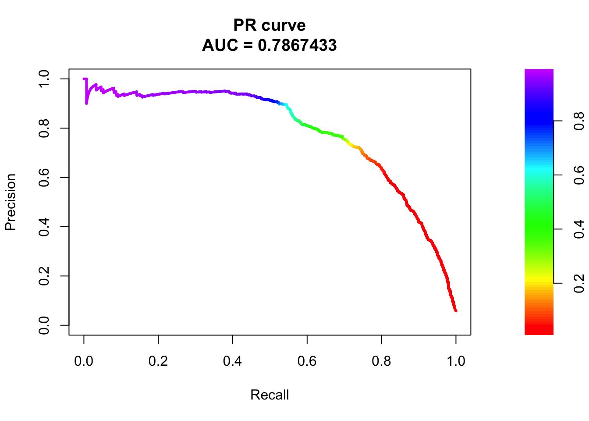
## sigma2
pred.probs=predict(fit.sig2,test,type="response")
glm.pred = rep(0, length(pred.probs))
glm.pred[pred.probs>0.5]= 1
table(glm.pred, test$y)
glm.pred 0 1
0 20539 503
1 141 770fg <- pred.probs[test$y == 1]
bg <- pred.probs[test$y== 0]
# ROC Curve
roc <- roc.curve(scores.class0 = fg, scores.class1 = bg, curve = T)
plot(roc)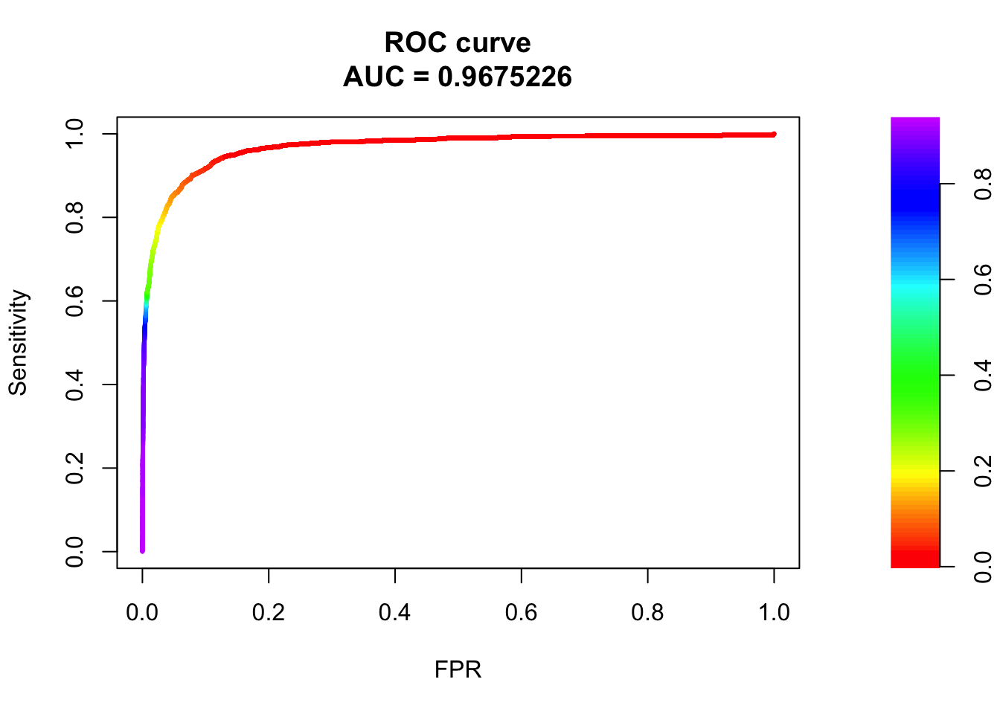
# PR Curve
pr <- pr.curve(scores.class0 = fg, scores.class1 = bg, curve = T)
plot(pr)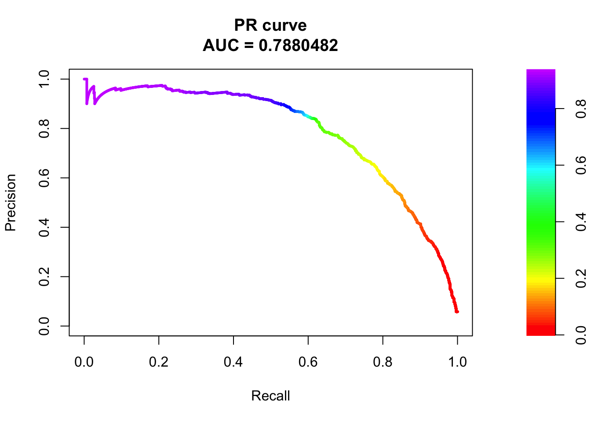
## sigma3
pred.probs=predict(fit.sig3,test,type="response")
glm.pred = rep(0, length(pred.probs))
glm.pred[pred.probs>0.5]= 1
table(glm.pred, test$y)
glm.pred 0 1
0 20524 486
1 156 787fg <- pred.probs[test$y == 1]
bg <- pred.probs[test$y== 0]
# ROC Curve
roc <- roc.curve(scores.class0 = fg, scores.class1 = bg, curve = T)
plot(roc)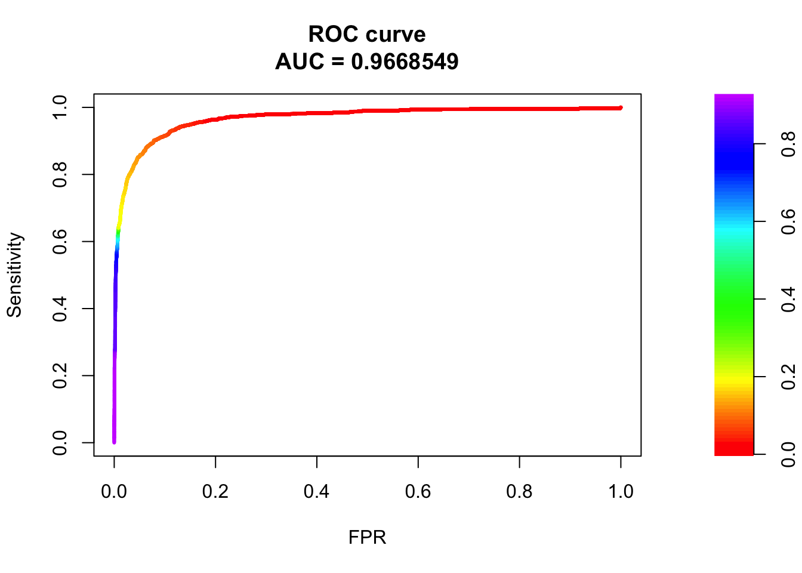
# PR Curve
pr <- pr.curve(scores.class0 = fg, scores.class1 = bg, curve = T)
plot(pr)## sigma4
pred.probs=predict(fit.sig4,test,type="response")
glm.pred = rep(0, length(pred.probs))
glm.pred[pred.probs>0.5]= 1
table(glm.pred, test$y)
glm.pred 0 1
0 20522 479
1 158 794fg <- pred.probs[test$y == 1]
bg <- pred.probs[test$y== 0]
# ROC Curve
roc <- roc.curve(scores.class0 = fg, scores.class1 = bg, curve = T)
plot(roc)# PR Curve
pr <- pr.curve(scores.class0 = fg, scores.class1 = bg, curve = T)
plot(pr)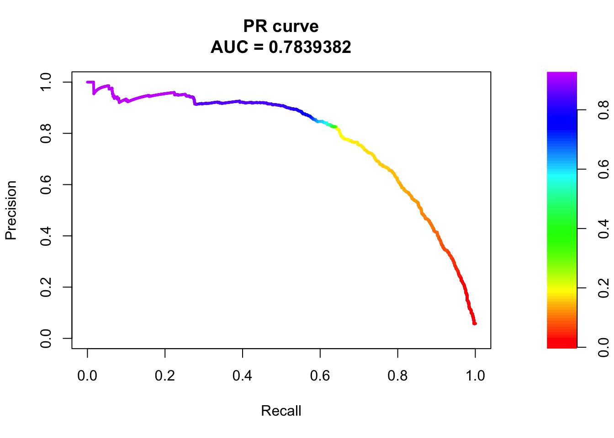
weights = matrix(NA, ncol = length(sigmas), nrow = dim(dat)[1])
for (i in 1:length(sigmas)){
weights[, i] = exp(-dat$tss_dist_to_snp^2/sigmas[i]^2)
}
weights = data.frame(weights)
colnames(weights) = c('sig1', 'sig2', 'sig3', 'sig4')dat2 = cbind(dat, weights)ggplot(dat2, aes(x = sig1)) +
geom_histogram(aes(color = as.factor(y), fill = as.factor(y)),
position = "identity", bins = 50, alpha = 0.4) +
scale_color_manual(values = c("#00AFBB", "#E7B800")) +
scale_fill_manual(values = c("#00AFBB", "#E7B800"))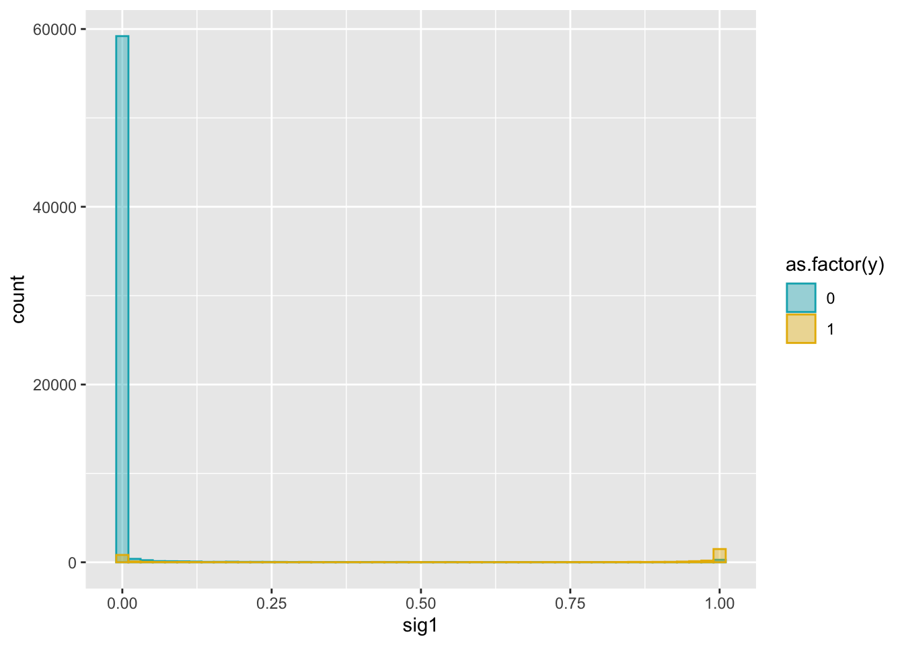
ggplot(dat2, aes(x = sig2)) +
geom_histogram(aes(color = as.factor(y), fill = as.factor(y)),
position = "identity", bins = 50, alpha = 0.4) +
scale_color_manual(values = c("#00AFBB", "#E7B800")) +
scale_fill_manual(values = c("#00AFBB", "#E7B800"))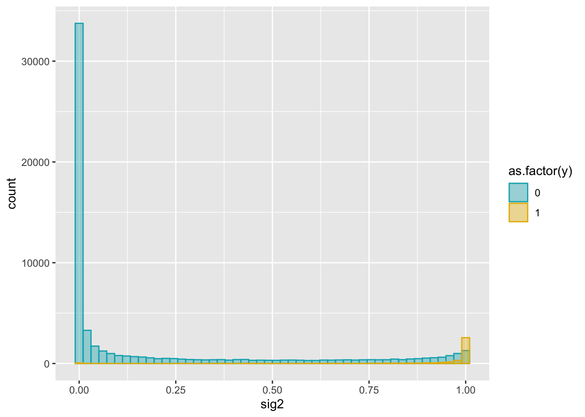
ggplot(dat2, aes(x = sig3)) +
geom_histogram(aes(color = as.factor(y), fill = as.factor(y)),
position = "identity", bins = 50, alpha = 0.4) +
scale_color_manual(values = c("#00AFBB", "#E7B800")) +
scale_fill_manual(values = c("#00AFBB", "#E7B800"))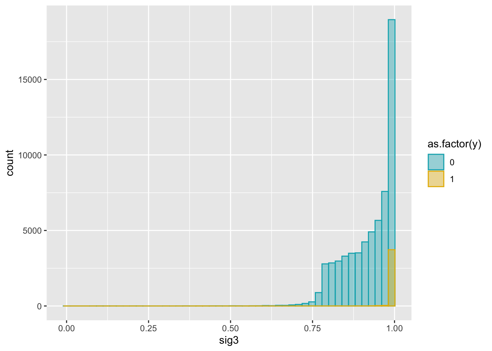
ggplot(dat2, aes(x = sig4)) +
geom_histogram(aes(color = as.factor(y), fill = as.factor(y)),
position = "identity", bins = 50, alpha = 0.4) +
scale_color_manual(values = c("#00AFBB", "#E7B800")) +
scale_fill_manual(values = c("#00AFBB", "#E7B800"))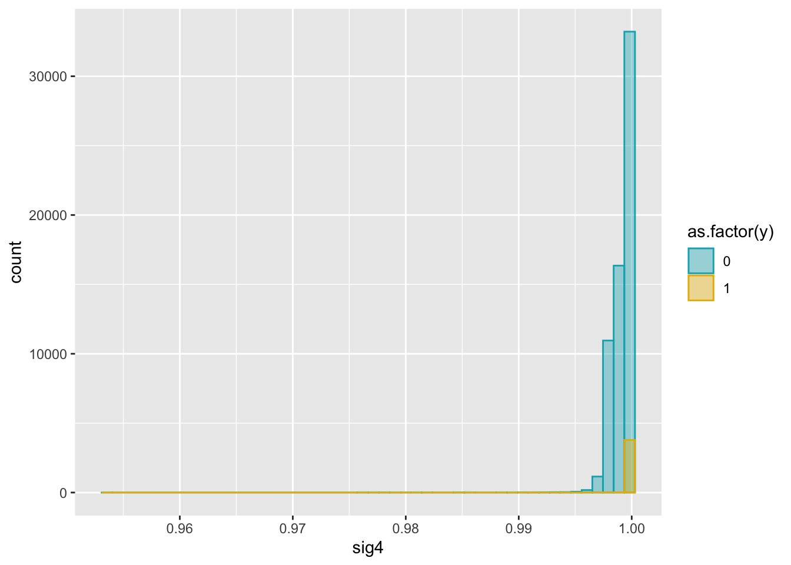
# split data in the same way
set.seed(1)
n = dim(dat2)[1]
indx = sample(1:n, round(2*n/3), replace = FALSE)
train = dat2[indx, ]
test = dat2[-indx, ]# fit model and evaluate performance
fit.sig1 = glm(y ~ UTR5 + UTR3 + intron + upstream + exon + sig1, data = train, family = "binomial")
fit.sig2 = glm(y ~ UTR5 + UTR3 + intron + upstream + exon + sig2, data = train, family = "binomial")
fit.sig3 = glm(y ~ UTR5 + UTR3 + intron + upstream + exon + sig3, data = train, family = "binomial")Warning: glm.fit: fitted probabilities numerically 0 or 1 occurredfit.sig4 = glm(y ~ UTR5 + UTR3 + intron + upstream + exon + sig4, data = train, family = "binomial")Warning: glm.fit: fitted probabilities numerically 0 or 1 occurredsummary(fit.sig1)
Call:
glm(formula = y ~ UTR5 + UTR3 + intron + upstream + exon + sig1,
family = "binomial", data = train)
Deviance Residuals:
Min 1Q Median 3Q Max
-2.7492 -0.1679 -0.1679 -0.1679 2.9218
Coefficients:
Estimate Std. Error z value Pr(>|z|)
(Intercept) -4.25439 0.04086 -104.13 <2e-16 ***
UTR5 3.00116 0.24081 12.46 <2e-16 ***
UTR3 2.73910 0.25257 10.85 <2e-16 ***
intron 3.98281 0.09417 42.30 <2e-16 ***
upstream 3.47761 0.22246 15.63 <2e-16 ***
exon 4.04047 0.28095 14.38 <2e-16 ***
sig1 4.01070 0.08689 46.16 <2e-16 ***
---
Signif. codes: 0 '***' 0.001 '**' 0.01 '*' 0.05 '.' 0.1 ' ' 1
(Dispersion parameter for binomial family taken to be 1)
Null deviance: 19491.1 on 43904 degrees of freedom
Residual deviance: 8537.3 on 43898 degrees of freedom
AIC: 8551.3
Number of Fisher Scoring iterations: 7summary(fit.sig2)
Call:
glm(formula = y ~ UTR5 + UTR3 + intron + upstream + exon + sig2,
family = "binomial", data = train)
Deviance Residuals:
Min 1Q Median 3Q Max
-2.2622 -0.0999 -0.0551 -0.0549 3.6049
Coefficients:
Estimate Std. Error z value Pr(>|z|)
(Intercept) -6.49602 0.11369 -57.137 <2e-16 ***
UTR5 4.02543 0.21912 18.371 <2e-16 ***
UTR3 1.96577 0.20603 9.541 <2e-16 ***
intron 3.22338 0.08764 36.782 <2e-16 ***
upstream 3.97905 0.18547 21.454 <2e-16 ***
exon 3.83058 0.25999 14.734 <2e-16 ***
sig2 4.94887 0.13213 37.454 <2e-16 ***
---
Signif. codes: 0 '***' 0.001 '**' 0.01 '*' 0.05 '.' 0.1 ' ' 1
(Dispersion parameter for binomial family taken to be 1)
Null deviance: 19491.1 on 43904 degrees of freedom
Residual deviance: 7689.3 on 43898 degrees of freedom
AIC: 7703.3
Number of Fisher Scoring iterations: 8summary(fit.sig3)
Call:
glm(formula = y ~ UTR5 + UTR3 + intron + upstream + exon + sig3,
family = "binomial", data = train)
Deviance Residuals:
Min 1Q Median 3Q Max
-2.2442 -0.2664 -0.0604 -0.0044 8.4904
Coefficients:
Estimate Std. Error z value Pr(>|z|)
(Intercept) -64.18069 2.95168 -21.74 <2e-16 ***
UTR5 4.88439 0.21454 22.77 <2e-16 ***
UTR3 2.68043 0.20093 13.34 <2e-16 ***
intron 3.79105 0.08351 45.40 <2e-16 ***
upstream 4.76853 0.18044 26.43 <2e-16 ***
exon 4.48146 0.24267 18.47 <2e-16 ***
sig3 61.73039 2.97492 20.75 <2e-16 ***
---
Signif. codes: 0 '***' 0.001 '**' 0.01 '*' 0.05 '.' 0.1 ' ' 1
(Dispersion parameter for binomial family taken to be 1)
Null deviance: 19491.1 on 43904 degrees of freedom
Residual deviance: 8714.6 on 43898 degrees of freedom
AIC: 8728.6
Number of Fisher Scoring iterations: 11summary(fit.sig4)
Call:
glm(formula = y ~ UTR5 + UTR3 + intron + upstream + exon + sig4,
family = "binomial", data = train)
Deviance Residuals:
Min 1Q Median 3Q Max
-2.2425 -0.2722 -0.0703 -0.0054 8.4904
Coefficients:
Estimate Std. Error z value Pr(>|z|)
(Intercept) -5423.3296 265.1349 -20.45 <2e-16 ***
UTR5 4.9368 0.2142 23.05 <2e-16 ***
UTR3 2.7305 0.2008 13.60 <2e-16 ***
intron 3.8373 0.0834 46.01 <2e-16 ***
upstream 4.8205 0.1802 26.74 <2e-16 ***
exon 4.5254 0.2416 18.73 <2e-16 ***
sig4 5420.8228 265.1582 20.44 <2e-16 ***
---
Signif. codes: 0 '***' 0.001 '**' 0.01 '*' 0.05 '.' 0.1 ' ' 1
(Dispersion parameter for binomial family taken to be 1)
Null deviance: 19491 on 43904 degrees of freedom
Residual deviance: 8804 on 43898 degrees of freedom
AIC: 8818
Number of Fisher Scoring iterations: 11## sigma1
pred.probs=predict(fit.sig1,test,type="response")
glm.pred = rep(0, length(pred.probs))
glm.pred[pred.probs>0.5]= 1
table(glm.pred, test$y)
glm.pred 0 1
0 20591 575
1 89 698fg <- pred.probs[test$y == 1]
bg <- pred.probs[test$y== 0]
# ROC Curve
roc <- roc.curve(scores.class0 = fg, scores.class1 = bg, curve = T)
plot(roc)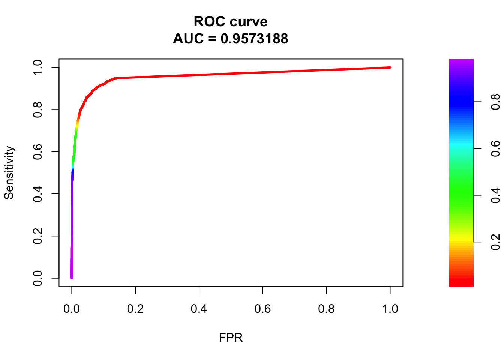
# PR Curve
pr <- pr.curve(scores.class0 = fg, scores.class1 = bg, curve = T)
plot(pr)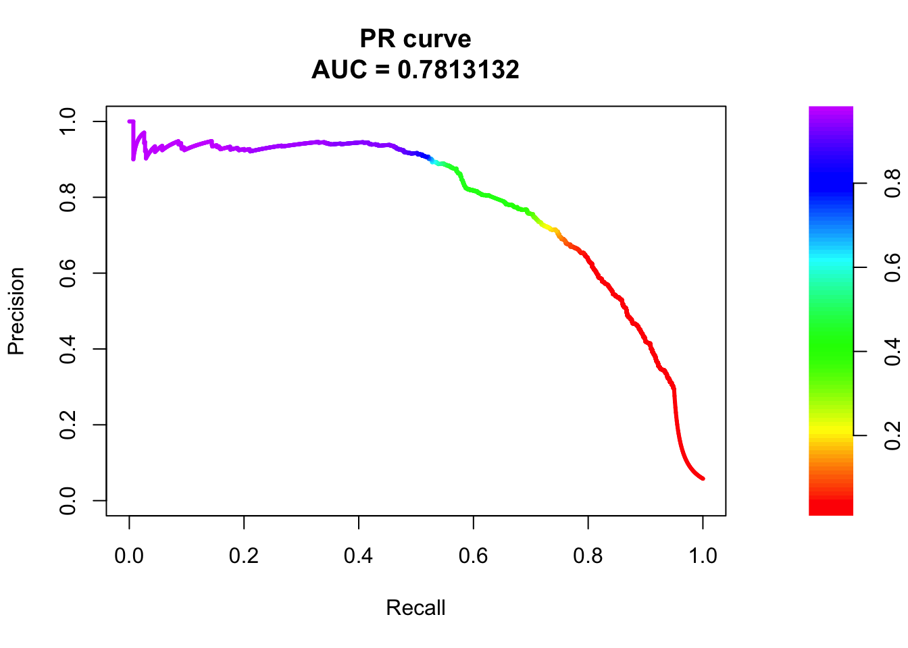
## sigma2
pred.probs=predict(fit.sig2,test,type="response")
glm.pred = rep(0, length(pred.probs))
glm.pred[pred.probs>0.5]= 1
table(glm.pred, test$y)
glm.pred 0 1
0 20528 485
1 152 788fg <- pred.probs[test$y == 1]
bg <- pred.probs[test$y== 0]
# ROC Curve
roc <- roc.curve(scores.class0 = fg, scores.class1 = bg, curve = T)
plot(roc)# PR Curve
pr <- pr.curve(scores.class0 = fg, scores.class1 = bg, curve = T)
plot(pr)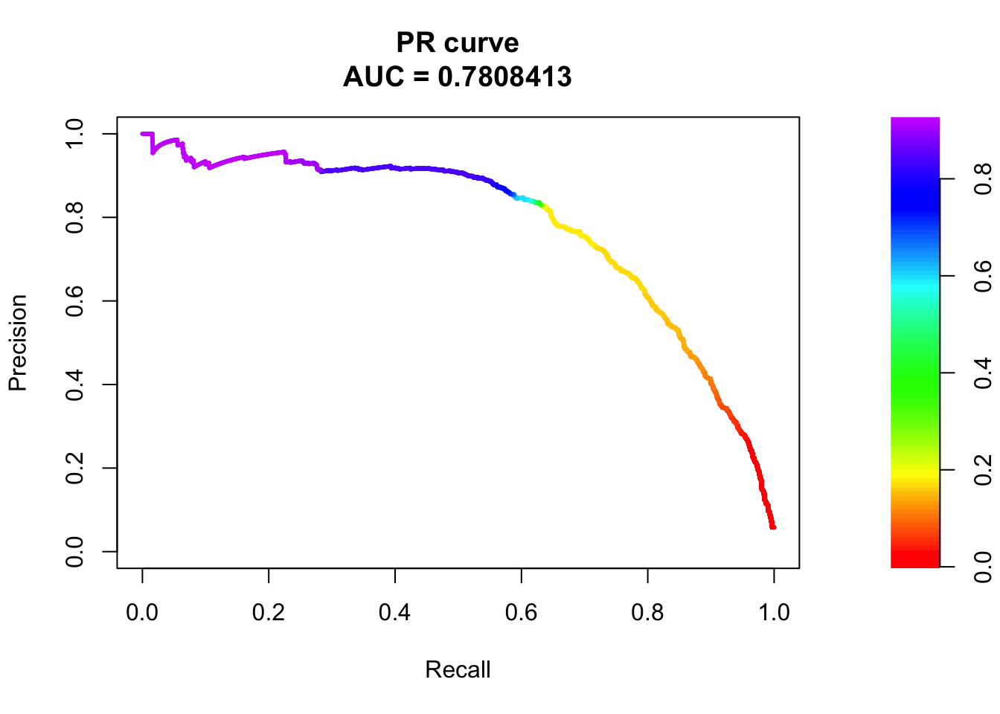
## sigma3
pred.probs=predict(fit.sig3,test,type="response")
glm.pred = rep(0, length(pred.probs))
glm.pred[pred.probs>0.5]= 1
table(glm.pred, test$y)
glm.pred 0 1
0 20505 456
1 175 817fg <- pred.probs[test$y == 1]
bg <- pred.probs[test$y== 0]
# ROC Curve
roc <- roc.curve(scores.class0 = fg, scores.class1 = bg, curve = T)
plot(roc)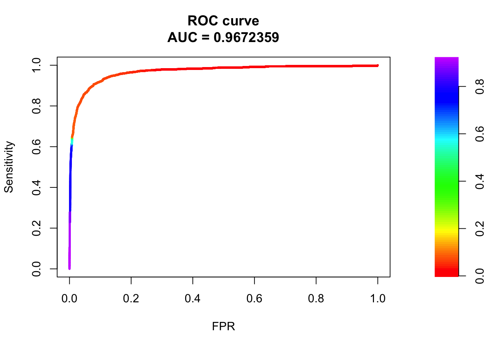
# PR Curve
pr <- pr.curve(scores.class0 = fg, scores.class1 = bg, curve = T)
plot(pr)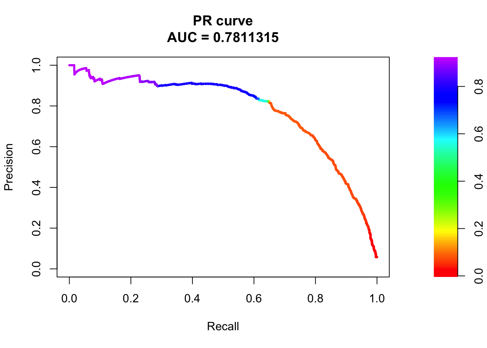
## sigma4
pred.probs=predict(fit.sig3,test,type="response")
glm.pred = rep(0, length(pred.probs))
glm.pred[pred.probs>0.5]= 1
table(glm.pred, test$y)
glm.pred 0 1
0 20505 456
1 175 817fg <- pred.probs[test$y == 1]
bg <- pred.probs[test$y== 0]
# ROC Curve
roc <- roc.curve(scores.class0 = fg, scores.class1 = bg, curve = T)
plot(roc)# PR Curve
pr <- pr.curve(scores.class0 = fg, scores.class1 = bg, curve = T)
plot(pr)
sessionInfo()R version 3.6.3 (2020-02-29)
Platform: x86_64-apple-darwin15.6.0 (64-bit)
Running under: macOS Catalina 10.15.5
Matrix products: default
BLAS: /Library/Frameworks/R.framework/Versions/3.6/Resources/lib/libRblas.0.dylib
LAPACK: /Library/Frameworks/R.framework/Versions/3.6/Resources/lib/libRlapack.dylib
locale:
[1] en_US.UTF-8/en_US.UTF-8/en_US.UTF-8/C/en_US.UTF-8/en_US.UTF-8
attached base packages:
[1] stats graphics grDevices utils datasets methods base
other attached packages:
[1] PRROC_1.3.1 dplyr_0.8.5 ggplot2_3.3.0 workflowr_1.6.1
loaded via a namespace (and not attached):
[1] Rcpp_1.0.4 compiler_3.6.3 pillar_1.4.3 later_1.0.0
[5] git2r_0.26.1 highr_0.8 tools_3.6.3 digest_0.6.25
[9] evaluate_0.14 lifecycle_0.2.0 tibble_3.0.1 gtable_0.3.0
[13] pkgconfig_2.0.3 rlang_0.4.5 rstudioapi_0.11 yaml_2.2.1
[17] xfun_0.12 withr_2.1.2 stringr_1.4.0 knitr_1.28
[21] fs_1.3.2 vctrs_0.2.4 rprojroot_1.3-2 grid_3.6.3
[25] tidyselect_1.0.0 glue_1.3.2 R6_2.4.1 rmarkdown_2.1
[29] farver_2.0.3 purrr_0.3.3 magrittr_1.5 whisker_0.4
[33] backports_1.1.5 scales_1.1.0 promises_1.1.0 htmltools_0.4.0
[37] ellipsis_0.3.0 assertthat_0.2.1 colorspace_1.4-1 httpuv_1.5.2
[41] labeling_0.3 stringi_1.4.6 munsell_0.5.0 crayon_1.3.4